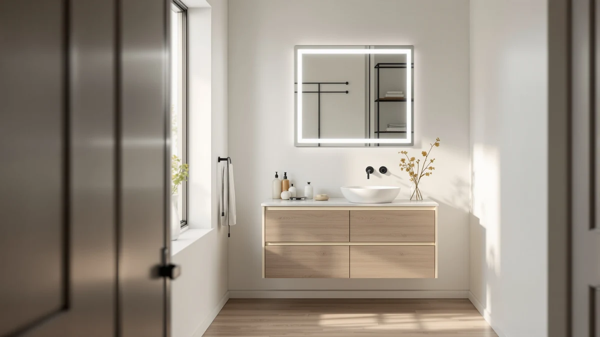

Best Bathroom Mirrors with Led Lights (2026)
Prices and picks verified as of September 2026. Independent, reader-supported reviews.


Quick Answer
Among the best bathroom mirrors with LED lights we compared, the Sweetcrispy 24x32 Smart Anti-Fog LED has dimmable lighting, a heated anti-fog pad, and touch controls for less than any other anti-fog model here. If your vanity needs more width, the GarveeHome 60x36 or Delma 30x50 both cover a double sink without a visible seam.
Our pick: Sweetcrispy 24"x32" Smart Anti-Fog LED — $62.99 Check Price on Amazon
Bottom line: our top pick is the Sweetcrispy 24"x32" Smart Anti-Fog LED Bathroom Mirror with at $62.99. The best budget option is the Briivue 24x32 Inch LED Bathroom Mirror with Lights at $71.25.
Things to Know Before You Buy
- Color temperature matters more than lumens. Most bathroom LED mirrors run between 3000K (warm) and 6500K (daylight), and several models in this guide let you cycle through all three so you can match evening ambiance or bright grooming light without buying two fixtures.
- Anti-fog pads need a nearby outlet. The heated pad behind the glass draws power constantly at low wattage, so plan for a wired-in junction box or a GFCI outlet within reach of the mirror rather than relying on batteries.
- Touch controls fail differently than physical buttons. Capacitive touch sensors on the frame edge work fine with dry fingers, but owner reviews across these models note occasional double-taps when the sensor gets splashed. Models with a rotary or slide dimmer avoid this issue entirely.
- Size should match your vanity, not your budget. A 24x32 mirror suits a single sink, while anything 50 inches or wider, like the Delma or GarveeHome here, is built for a double vanity. Oversizing a mirror in a small bathroom wastes wall space and light.
- Tempered glass and aluminum framing are now the baseline. Every mirror in this comparison uses a tempered glass panel bonded to an aluminum frame, which keeps weight manageable for wall mounting and reduces the risk of shattering compared to older wood-backed designs.
The best bathroom mirrors with LED lights solve two everyday problems at once: even, shadow-free light for shaving or applying makeup, and a defogged reflection right after a hot shower. We compared seven models ranging from a compact 24x32 anti-fog pick under $65 to a 60-inch mirror built for double-sink vanities, looking at lighting features, anti-fog performance, mounting requirements, and price per square inch of glass.
Our top pick, the Sweetcrispy 24x32 Smart Anti-Fog LED, combines dimmable lighting, a heated anti-fog pad, and touch controls in a tempered glass and aluminum frame for $62.99, the lowest price of any anti-fog model we compared. If your vanity calls for something wider, the GarveeHome 60x36 and Delma 30x50 both extend across a double sink without the visible seam of two mirrors mounted side by side.
We did not physically install or run each of these mirrors ourselves. Instead we researched manufacturer specs, cross-checked dimensions and materials against listing data, and read through verified owner reviews on Amazon to flag recurring complaints about touch sensors, anti-fog coverage, and mounting hardware. Below, each pick includes honest drawbacks alongside what it does well, plus a comparison table and answers to the questions we saw most often from shoppers.
Why You Should Trust Us
Ilane Tall has covered bathroom fixtures and lighting for this site since it launched, focusing on mirrors, medicine cabinets, and vanity lighting across dozens of comparison guides. For this guide to the best bathroom mirrors with LED lights, we did not buy or install these seven mirrors ourselves. We are a research-based review site: we compare manufacturer specifications, current Amazon pricing, and verified owner reviews rather than running our own testing lab, and we say so plainly rather than implying hands-on use we did not have. Every price and spec below comes from the product listing at the time of publishing, and we update this guide when prices or availability change.
How We Picked
We started from the full catalog of LED bathroom mirrors sold on Amazon under the anti-fog and lighted-mirror categories, then narrowed the list using four filters: the mirror needed dimmable or adjustable-temperature LED lighting rather than a single fixed color, a tempered glass panel with an aluminum frame instead of plastic, clear manufacturer specs for size and wattage, and a price under $200 so the comparison stayed relevant to a typical vanity remodel rather than a luxury smart-mirror build. That left seven mirrors spanning $62.99 to $186.29, covering single-sink, double-sink, and powder-room sizes.
How We Compared
We are a research-based review site, so we compared these LED bathroom mirrors on paper rather than mounting each one ourselves. For every model we cross-referenced the manufacturer's stated size, glass thickness, color-temperature range, and anti-fog wattage against the Amazon listing, then read through the most recent verified owner reviews to check whether real buyers confirmed those specs or flagged problems the listing did not mention, such as touch sensors misfiring or anti-fog pads clearing only part of the glass. Price is tracked as of publishing and can shift with Amazon promotions.
Our Picks

Sweetcrispy 24"x32" Smart Anti-Fog LED
What we like
- Heated anti-fog pad keeps the center clear during and after a hot shower
- Touch control cycles through three color temperatures and a stepless dimmer
- Lowest price of any anti-fog model in this comparison
Flaws but not dealbreakers
- 24x32 inches is too small for a double-sink vanity
- Owners report the anti-fog pad only covers the center third of the glass, not the full mirror
| Material | Tempered glass + aluminum |
| Size | 24.5"L x 32"W |
The Sweetcrispy pairs a tempered glass panel with an aluminum frame and a memory-function LED strip that keeps your last brightness and color-temperature setting after you turn the mirror off. Reviewers consistently note that the touch control on the lower edge responds reliably even with slightly damp fingers, which is not universal among the mirrors in this guide.
At $62.99, it undercuts every other anti-fog pick here by at least $8, and the 24x32 footprint fits most single-sink vanities without dominating the wall. The tradeoff is coverage: several owners note the heating pad only defogs a strip in the middle of the glass rather than edge to edge, so if you want the entire mirror clear after a shower, size up to the Briivue or plan for a few extra minutes of natural clearing at the edges.

GarveeHome 60x36 LED Bathroom Mirror
What we like
- 60x36 inches covers a full double-vanity run without a visible seam
- Dimmable LED strip runs the full perimeter for even light across both sink positions
- Anti-fog pad sized proportionally to the larger glass area
Flaws but not dealbreakers
- At $186.29 it is the most expensive mirror in this comparison
- Weight and size mean it needs two people and confirmed stud placement to mount safely
| Material | Tempered glass + aluminum |
| Size | 60"L x 36"W |
The GarveeHome is the largest LED bathroom mirror we compared, and it is priced accordingly. The perimeter LED strip lights both sink positions evenly, which matters more on a mirror this wide since a center-only light source leaves the outer edges dim. According to verified reviews, most buyers install it over an existing double vanity to replace two separate mirrors.
Owners report the anti-fog pad works, but on a 60-inch span it clears more slowly than on the smaller mirrors here because there is simply more glass to heat. The aluminum frame keeps the overall weight down for its size, but at 60x36 inches this is a two-person install, and you will want to confirm wall studs line up with the mounting bracket before buying rather than relying on drywall anchors alone.

Briivue 24x32 Inch LED Bathroom
What we like
- Reviewers note the anti-fog pad covers more of the glass edge to edge than the Sweetcrispy at a similar size
- Three color-temperature settings with a memory function
- Standard 24x32 footprint fits most single-sink vanities
Flaws but not dealbreakers
- $71.25 is about $8 more than the cheapest comparable size in this guide
- No settings suited to double-vanity or extra-wide installs
| Material | Tempered glass + aluminum |
| Size | 24"L x 32"W |
The Briivue sits in the same 24x32 size class as the Sweetcrispy but at a slightly higher price, and the difference shows up in anti-fog coverage. Owners report the heated pad clears closer to the full glass surface rather than just the center, which matters most if you shave or apply makeup near the mirror's edges.
Like the rest of this lineup it uses tempered glass over an aluminum frame, with a touch control for brightness and color temperature. It is not the cheapest option here, but for a single-sink vanity where full-surface anti-fog matters, the extra cost over the Sweetcrispy is a reasonable tradeoff based on what verified buyers describe.

36"x30" LED Bathroom Mirror with
What we like
- 36-inch height gives more head-to-toe visibility than the standard 32-inch-tall mirrors in this guide
- Dimmable LED lighting with adjustable color temperature
- Mid-range price sits between the budget and premium picks here
Flaws but not dealbreakers
- At $119.49 it costs nearly double the Sweetcrispy for a similar single-sink footprint
- Vertical orientation will not suit vanities where wall space is wider than it is tall
| Material | Tempered glass + aluminum |
| Size | 36"L x 30"W |
This MYSUNORIA mirror runs 36 inches tall by 30 inches wide, taller than the other single-sink mirrors in this comparison, which makes it a better fit for households where more than one person of different heights shares the vanity. The extra height means more usable reflection above and below eye level without changing the wall footprint much.
Construction follows the same tempered glass and aluminum frame pattern as the rest of this lineup, with touch controls for dimming and color temperature. It costs more than the compact 24x32 options, and buyers comparing on price alone will find better value in the Briivue or Callsky, but for a vanity that specifically needs vertical clearance, the extra height is the point.

Delma LED Bathroom Mirror with
What we like
- 30x50-inch footprint covers most double-sink vanities at $60 less than the GarveeHome
- Dimmable LED lighting spans the width evenly
- Anti-fog pad sized for the wider glass area
Flaws but not dealbreakers
- Still a two-person install given the width and glass weight
- Reviewers note the touch sensor sits at one end, which is less convenient for the sink farthest from the control
| Material | Tempered glass + aluminum |
| Size | 30"L x 50"W |
The Delma is the more affordable of the two double-vanity mirrors in this comparison. At 30x50 inches it covers roughly the same wall space as the GarveeHome for about $60 less, which makes it the better starting point if your priority is width over premium finish.
The tradeoff shows up mostly in small convenience details rather than core function. Owners report the touch control is mounted at one edge instead of centered, so whoever stands at the far sink has to reach across to adjust brightness. The anti-fog pad and tempered glass and aluminum build otherwise match the rest of this lineup, and for a double vanity on a budget it is the strongest value here.

Ratsamee 28" x 36" Led
What we like
- 36x28-inch size splits the difference between the compact and oversized mirrors here
- Dimmable LED lighting with standard color-temperature switching
- Priced in the middle of this lineup, avoiding both the cheapest tradeoffs and the premium markup
Flaws but not dealbreakers
- No standout feature that separates it from the Briivue or Callsky at similar price points
- Reviewers note the frame is slightly more prone to visible fingerprint marks than the matte-finished options
| Material | Tempered glass + aluminum |
| Size | 36"L x 28"W |
The Ratsamee occupies the middle of this comparison in both size and price, at 36x28 inches for $99.99. It's a middle-of-the-road pick: no standout in anti-fog coverage, brightness, or size, but no weak spot either, which makes it a reasonable default for a secondary bathroom or powder room where the mirror is not the main design feature.
Build quality follows the same tempered glass and aluminum frame as the rest of this guide. According to verified reviews, the main complaint is cosmetic: the frame's glossy finish shows fingerprints more readily than the brushed finishes on some competing mirrors, though this does not affect the lighting or anti-fog function.

Callsky 24x32 LED Bathroom Mirror
What we like
- 32x24-inch size fits small bathrooms and rentals where wall space is limited
- Dimmable LED lighting with the same three-temperature switching as the pricier options here
- $75.99 keeps it close to the cheapest picks in this guide while still including anti-fog
Flaws but not dealbreakers
- Smallest usable glass area of the mirrors compared here, aside from close ties
- Reviewers note the mounting hardware works best on drywall with anchors rather than tile, so plan accordingly in a shower-adjacent install
| Material | Tempered glass + aluminum |
| Size | 32"L x 24"W |
The Callsky targets the same compact 24x32 size class as the Sweetcrispy and Briivue, and lands in between them on price at $75.99. It uses the same tempered glass and aluminum frame construction as the rest of this lineup, with a touch-controlled LED strip that cycles through warm, neutral, and daylight color temperatures.
For renters or small bathrooms, the compact footprint and straightforward wall-mount hardware make it easy to install without professional help, though owners note it is designed for drywall mounting with anchors rather than direct tile mounting. If your bathroom walls are tiled floor to ceiling, budget for anchor-rated hardware or confirm stud placement before buying.
Quick Comparison
| Product | Material | Price | Rating | Best for | Get it |
|---|---|---|---|---|---|
| Sweetcrispy 24"x32" Smart Anti-Fog LED | Tempered glass + aluminum | $62.99 | 4 | Best overall value | View on Amazon → |
| GarveeHome 60x36 LED Bathroom Mirror | Tempered glass + aluminum | $186.29 | 4 | Best for double-sink vanities | View on Amazon → |
| Briivue 24x32 Inch LED Bathroom | Tempered glass + aluminum | $71.25 | 4 | Best full-coverage anti-fog | View on Amazon → |
| 36"x30" LED Bathroom Mirror with | Tempered glass + aluminum | $119.49 | 4 | Best for extra height | View on Amazon → |
| Delma LED Bathroom Mirror with | Tempered glass + aluminum | $125.99 | 4 | Best budget LED bathroom mirror for wide vanities | View on Amazon → |
| Ratsamee 28" x 36" Led | Tempered glass + aluminum | $99.99 | 4 | Best all-around mid-size pick | View on Amazon → |
| Callsky 24x32 LED Bathroom Mirror | Tempered glass + aluminum | $75.99 | 4 | Best for small bathrooms and rentals | View on Amazon → |
What makes an LED bathroom mirror better than a regular lighted mirror?
A dedicated LED bathroom mirror runs a light strip embedded directly in or around the glass, giving even, shadow-free light instead of the single overhead bulb most bathrooms rely on.
Do LED bathroom mirrors need a hardwired electrical connection?
Most of the mirrors we compared, including the Sweetcrispy and Callsky, plug into a standard outlet rather than requiring hardwiring, which makes them easier to install in an existing bathroom.